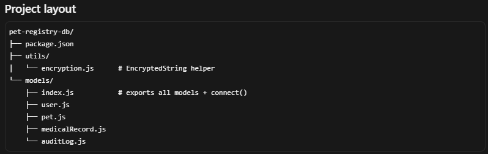

The original artifact was an application that could create, read, update, and delete records, but data was handled without a formal database layer. There were no MongoDB schemas, no persistent data model, and no structured rules for how sensitive information should be stored or accessed.
It shows a clear progression from a working prototype to a more professional, production-minded design. The original project proved I could implement basic application logic and CRUD behavior. The MongoDB schema enhancement shows I can design data structures that match business requirements, not just write endpoints that manipulate temporary data.
Describe specifically what you changed: schema redesign, normalization, added constraints/indexes, parameterized queries for security, CRUD functionality, or migration to a different database system. Be concrete about the data layer change.
This enhancement taught me that good software development is iterative. The CRUD prototype showed I could build functionality; the MongoDB schema layer shows I can design how that functionality is supported by secure, structured, persistent data.
